首页 > 技术 > Netconf配置及其RPC和Notification下发流程解析
Netconf配置及其RPC和Notification下发流程解析
原文 http://blog.csdn.net/haopeng123321/article/details/54933355 2017-02-09 09:10:54 33 ℃ 0 评论
最近两个月一直在捣鼓netconf，现在搞得小有成效，因此总结一番，以便和广大网友进行深入探讨。
我们是基于libnetconf开源软件（https://github.com/CESNET/libnetconf）进行二次开发。对于这套代码，给我感觉的就是一个“乱”。相比于一些成熟软件来说，这个软件还有很多地方需要改善，比如说代码中经常出现魔鬼数字、某些函数长度接近1000行（source insght都无法解析）。好在，这个软件一直在更新维护中，还是非常感谢这群无私的人。
在github中有两套libnetconf， 一套是libnetconf，另外一套是libnetconf2。libnetconf2是正在开发中的版本，还未正式发布。这个版本相比于libnetconf会有很大变化，比如说：libnetconf中编译yang模型是采用外部软件pyang进行，而到了libnetconf2中会把编译工具会集成到libnetconf2中。从个人角度来说，还是期待libnetconf2。
一、Netconf编译与配置
1.1 编译
移植软件的第一步就是编译，如果是交叉编译的话，那份痛苦是不言而喻的。对于我们项目来说，需要移植到powerpc平台上，因此很多库都需要自己编译出来（编译libnetconf花了一天半）。这里把一些必需依赖库编译方法以及编译过程中遇到的错误，展示出来，免得大家多走弯路。
Linux编译三步骤：configure，make，make install。如果不熟悉linux编译的请自学。
1.2 设置环境变量
为了编译方便，设置一下环境变量（其实也可不设置）即设置工具链所在位置，具体设置如下：
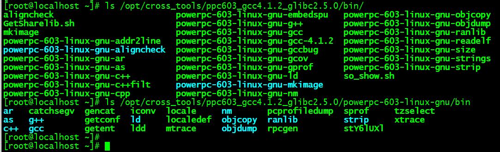
将这两个目录设置到PATH中，避免不必要的错误：
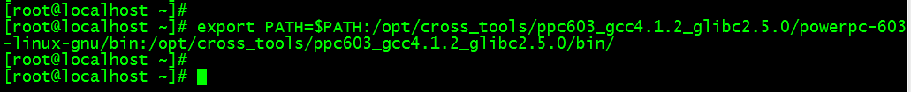
1.3 编译依赖库
由于依赖库非常多并且不同的编译环境，编译情况也不尽相同，这里只把常见依赖库和编译有困难的库，给大家展示出来。
1、libxml2编译
1）configure 创建makefile
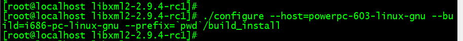
2）make 编译 最后单元测试编译失败，对于我们使用者来说没有影响，因为库文件已经生成。
3）make install 安装到指定目录中，在上面configure过程中已经设置为当前目录下build_install。 将编译生成的lib和include这两个目录，拷贝到工具链中。
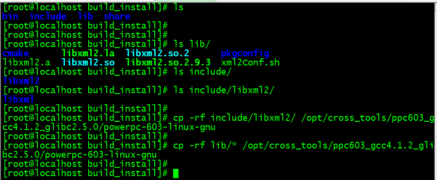
2、libssh编译
在编译libssh的时候需要编译libz、openssl依赖库，这两个比较容易编译出来，因此不再阐述。Libssh采用cmake方式编译：
1）修改DefineOptions.cmake文件，打开静态库编译选项，如果不需要静态库则可以忽律此步骤
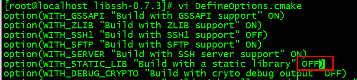
2）创建mkdir build_install保存编译生成的文件，进入此目录执行cmake命令，此步骤实则是生成makefile过程，如下图所示：
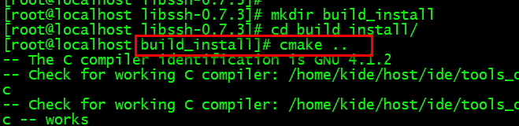
进入该目录中，然后输入cmake .. (此处有两点，即上层目录)
3）执行make操作，进行编译，编译完后如下图所示：
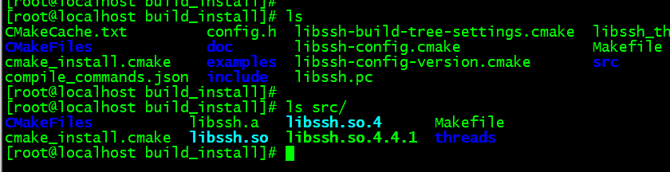
4）将include、静态库和动态库拷贝到工具链中即可。
常见两种编译方式都已介绍，后面在编译其他依赖库，基本上都是一样的套路。
3、编译libgpg-error
1）这个编译没有任何问题，我们需要把编译生成的可执行文件如gpg-error、gpg-error-cofig拷贝到工具链中，并且以powerpc-603-linux-gun-进行重命名。
2）拷贝头文件和库到对应的工具链中。
4、编译libgcrgpt
编译libgcrgpt时候，如果连接过程中出现错误，比如说找不到某个函数，原因是在编译过程进行了优化，将原始函数定义修改为以下划线开始。此问题修改是configure过程中，增加一个参数：—disabled-asm。
5、编译libnetconf
将上面一些依赖库和其他库都编译完后，再编译libnetconf就非常容易了。
1） ./configure --host=powerpc-603-linux-gnu --build=i686-pc-linux-gnu --prefix=pwd/build_install
2）make
3）make install
这三步非常的顺利没有出现任何错误。
6、编译netopeer
Netopeer是libnetconf官方提供server，cli以及编译工具lnctool。在编译netopeer时候遇到了无法解析yang文件问题，此处解决的方法，升级python并安装pyang。
1.4 工具lnctool
假设经过第一步后成功编译出libnetconf和netopeer，这样我们就可以直接运行netopeer。netconf默认监听端口是830端口。
众所周知，netconf协议支持自定义rpc，因此此步骤需要做的是如何在现有netconf中增加自己的yang模型以及执行自己的rpc？？这里就需要用到这个工lnctool。这个工具是用python实现的，里面代码也比较简单，比如说调用其他应用程序（pyang）或者直接写文件。
这里有一个官方提供的demo（图灵机），地址为：https://rawgit.com/CESNET/libnetconf/master/doc/doxygen/html/d9/d25/transapi.html#transapiTutorial
这个文档有两个重点，第一个重点是生成yin文件以及源码.c文件：
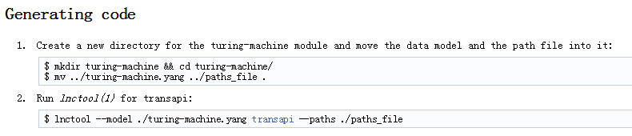
另外一个重点是就是实现源文件中相关接口—rpc函数。当经过以上两个步骤之后，就可以进行编译，默认编译出动态库.so文件。
当我们把rpc函数实现之后，就可以通过另外一个工具，netopeer-manager安装自定义模型，使用命令行如下：
Java| 1 | netopeer-manager add --name [module name] --model [model path] --transapi [model share library] --datastore [module datastore file] |
如下图所示，当然我们也可以不使用netopeer-manager，直接修改配置文件，下面章节我将会介绍。
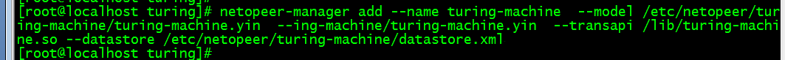
1.5 修改配置文件
【libnetconf之Streams】
众所周知，netconf之前rpc、notification两种操作，其中notification类似server主动发送消息，然而它不是简单的主动发送，而是支持订阅操作。Libnetconf就是通过stream实现notification（stream其实就是一个普通文件）。
Streams默认存放路径/var/lib/libnetconf/streams。这个目录中一般有两个配置文件，NETCONF.event：这个文件事件接收者，也就是stream对象。业务层只需要把事件写入到这个文件中，那么所有的订阅者就能够都接收到这个事件。这个文件在后面notification篇会详细介绍。
NETCONF.rules：这个文件目前总是空的。
【netopeer配置文件】
Netopeer是官方发布的一个服务端，但从个人角度认为这个server写的不是很好，有些内容很凌乱。如果有时间日后会重写这个server。
Netopeer默认安装路径是/usr/local/etc/netopeer或者/etc/netopeer/，在这个目录中有两个子目录分别为cfgnetopeer，modules.conf.d。
1、cfgnetopeer
这个目录是netopeer相关配置，文件虽然很多，但是我们只需要关注datastore.xml文件即可。datastore.xml主要包含三部分（三个datastore）：
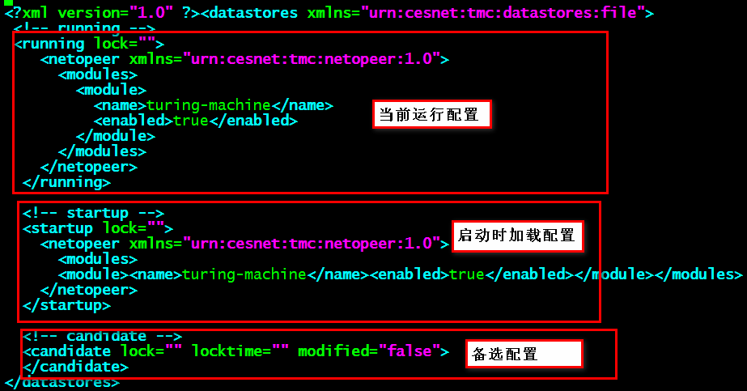
说一下备选配置：备选配置是即将生效的配置，换句话说，用户下发的配置一般都会保存在备选配置中，等待时机（等待commit消息），将备选配置保存到running中。注：netopeer中实现的datastore是最简单的方式，以文件方式存储配置。对于这种方式，性能是最低的，对于一些性能要求较高的项目，请考虑一下这个地方的行问题！！提示：这个地方datastore可以采用数据库，如使用no-sql型数据库。
2、modules.conf.d
模型配置保存的目录，这个目录存储的是模型相关配置。一说到模型就感觉有点抽象，那好我用大白话说一下：这个目录保存的就是yang文件定义的module，这次够直白了吧！！！
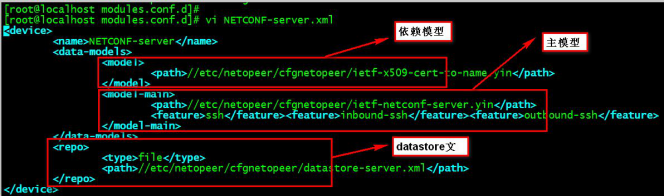
依赖模型：为了实现主模型，往往需要其他模型作为辅助。依赖模型在yang文件中的体现是通过import关键字导入的。
主模型：yang文件中定义的module就是主模型。依赖模型可以有多个，但是主模型只能有一个。
Datastore：用于存储配置，可以是文件，也可以其他任何存储介质。如果在datastore是一个文件，那么不用手动创建，netopeer在启动的时候会创建的。
小结：在上面讲过使用netopeer-manager添加新增模型，就是修改或者创建上面配置文件。因此我们完全可以不使用netopeer-manager这个工具。
二、RPC和Notification下发流程解析
Libnetconf代码自己只把rpc、notification流程详细看过，像一些netconf-session维护，hello消息等没有仔细看。像之前我说过的，libnetconf有些代码非常长且source insight无法写解析出来，所以有些代码片段可能比较突兀，请谅解。
2.1 总体流程图
图1：总体流程图
上图是只是最简易流程图，但已经能够描述清楚。如果有人比较清楚netconf协议，会有一些疑问，为什么上图中没有包含hello流程？？难道是在Others里面吗？？其实不是，在进入这个流程之前，hello消息已经处理过了，也就是说进入这个流程时netconf-session已经建立成功（create_netconf_session处理）。
消息分类：
- 消息close-session：优雅终止netconf-session。
- 消息kill-session：强制终止netconf-session并且释放相关资源。
- 消息 create-subscription：订阅消息，此消息会在下一篇notification中介绍的。
前两种消息类似，都可以达到终止会话功能，具体差别可以先阅读以下netconf相关协议以及netopeer中代码。我们分析的重点在othes消息中。
2.2 rpc处理流程
下面流程图是ncds_apply_rpc2call函数处理流程。
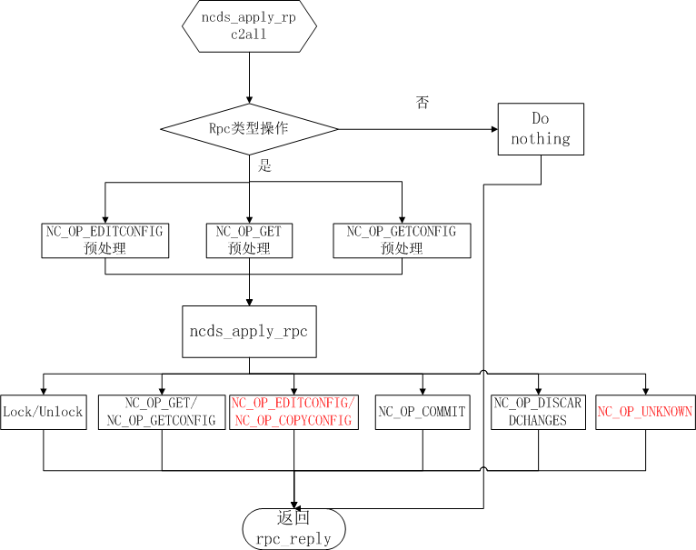
图2：rpc处理流程图
注：这个函数代码行数非常多，source insight无法正常解析。在这里我会分析两个分支流程，一个edit-config，一个unkown。 这两个有什么区别呢？？edit-config是协议标准规定的rpc，而unkown是自定义rpc处理。由于各个厂商需求不同，可能有的厂商定义并实现了自定义rpc，有的厂商可能就没有自定义，但自定义rpc完全可以不出现。
1、edit-config配置流程
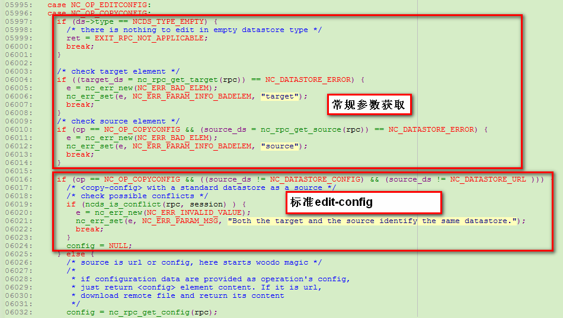
图3：代码片段1
开始的几行代码，是从rpc结构中获取相应参数，这个没有什么可解释的。
下面的if判断是对edit-config表现形式区分的。Edit-config有两种表现形式，常见表现形式是所有配置项都在edit-config中体现，这种也是标准edit-config，如图4：
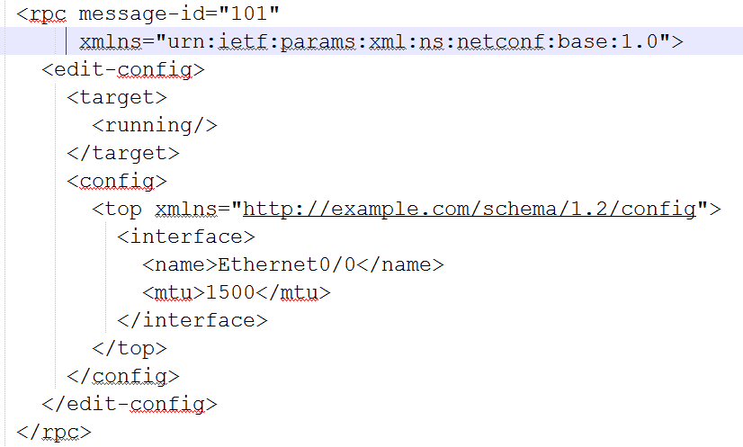
图4：标准edit-config格式
另外一种edit-config是以url表现的，这种表现形式在协议中也没有样例，具体是什么样子，我也不太清楚。
这里分析一下edit-config处理流程，代码如下：
| 1 | ret=ds->func.editconfig(ds,session,rpc,target_ds,config,nc_rpc_get_defop(rpc),nc_rpc_get_erropt(rpc),&e); |
这里是一个回调函数，如果datastore的表现形式是file，则此处的回调函数是：ncds_file_editconfig。对于这个函数，开始一部分是进行常规校验，函数处理流程图如下：
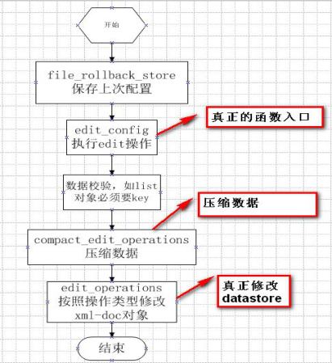
补充说明一下：
1）file_rollback_store是为了回滚，里面机制是备份当前datastore全部配置。如果出现错误，并且在下发rpc的时候，下发了rollback-on-error标志，才会进行回滚。
2）compact_edit_operations 主要根据下发内容进行合并处理。
3） edit_operations 下发rpc的时候往往下发操作类型，如果没有下发，默认是replace。操作类型一共有replace，create，delete，remove，merge五种。根据操作类型不同，修改对应的datastore。
2、自定义rpc处理流程
对于自定义的rpc来说，比较简单。在上面也说过了，自定义rpc处理流程是Unkown分支中进行处理，具体代码如下：
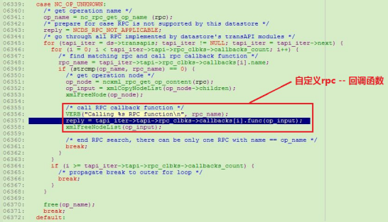
这个回调函数实现在什么地方呢？？其实就在我们编译yang模型时候生成的.c文件中。这个地方需要注意：回调函数中必须返回rpc_reply消息，否则libnetconf会自己构造一个rpc_error消息返回给客户端。
上面是rpc整个流程，代码分析不多，大部分都是流程图，其实只需要把流程搞通，至于代码熟悉度，只是时间问题。上面分析的只是rpc消息中edit-config消息，其他消息比较简单，需要自己去看一下。下面分析一下notification消息。
2.3 notification处理流程
在介绍notification之前，先普及一下netconf协议一点点基础知识。
1）若想实现notification通知消息，客户端必须下发rpc订阅消息即create-subscription
2）在下发订阅消息时候如果参数中没有stream则默认stream是NETCONF。个人理解stream是隧道、通道含义。用户可以订阅某个隧道下面某些事件。事件上报时，流经哪个隧道，这完全取决于业务模块。
3）Netconf协议规定，一个netconf-session有且只有一个订阅，并且订阅消息一旦创建就不允许修改。
4）订阅消息支持结束时间stopTime参数，如果没有此参数则订阅功能与netconf-session是具有相同的生命周期。
Netopeer-server中实现rpc订阅消息代码如下，代码比较简单，就是创建一个线程监听stream对象。
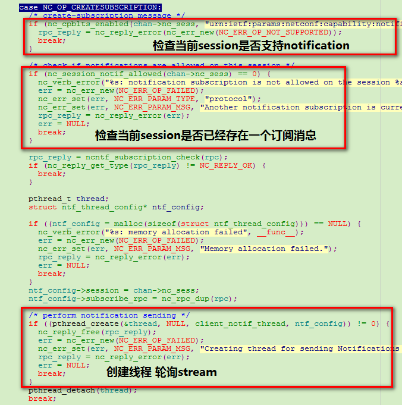
轮询具体实现函数是ncntf_dispatch_send，这个函数是一个死循环。但是从命名上来看，感觉不像死循环（所以我吐槽libnetconf代码不友好）。下面ncntf_dispatch_send函数具体处理流程：
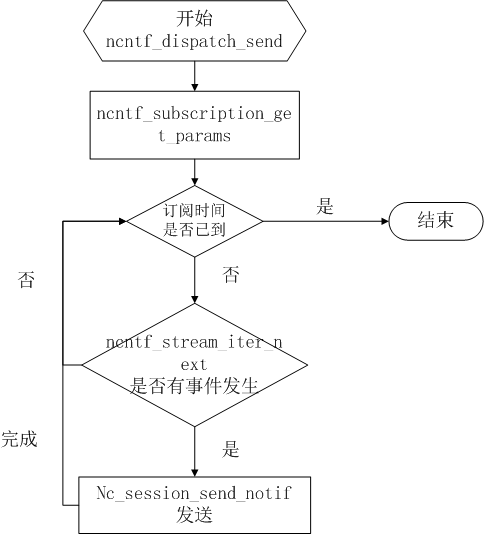
创建notification事件，可以有以下接口，
事件是xml节点方式作为入参：
Java| 12 | int ncxmlntf_event_new(time_t etime, NCNTF_EVENT event, ...);nc_ntf* ncxmlntf_notif_create(time_t event_time, const xmlNodePtr content); |
事件是以字符串方式作为入参：
Java| 1 2 | intncntf_event_new(time_tetime,NCNTF_EVENTevent,...); nc_ntf*ncntf_notif_create(time_tevent_time,constchar*content); |
以上接口使用方式可参考头文件说明。
三、总结
如果没有任何Netconf基础就看这篇文章，是毫无意义的，因此在看之前请先熟悉一下netconf协议。
libnetconf源码还是比较年轻的代码，里面有很多需要优化地方，例如：源码中有很多频繁的申请、释放内存，这样很容易造成内存碎片，还有在实现notification时采用文本文件方式实现stream，这样的性能是低下的。
虽然libnetconf中有很多不足，但是它还是做了很多事情，如果没有精力开发一套netconf协议栈，那么大家可就凑合用吧！！
至此，netconf分析基本结束，欢迎大家一起讨论！！
作者简介：
徐小冰：毕业于河北大学，主要从事嵌入式软件开发，虚拟化，SDN。目前基于ODL和Open vSwitch进行二次开发，希望与广大网友一起探讨学习。作者系OpenDaylihgt群（194240432）资深活跃用户，@IT难人
--------------华丽的分割线------------------
本文系《SDNLAB原创文章奖励计划》投稿文章，该计划旨在鼓励广大从业人员在SDN/NFV/Cloud网络领域创新技术、开源项目、产业动态等方面进行经验和成果的文字传播、分享、交流。有意向投稿的同学请通过官方唯一指定投稿通道进行文章投递，投稿细则请参考《SDNLAB原创文章奖励计划》
猜你喜欢
- 2017-04-25 IDEA里怎么导入大数据maven项目（非web项目）？
- 2017-04-25 css伪类和logo部分效果实现
- 2017-04-25 WinForm form属性
- 2017-04-25 IDEA里怎么导入maven项目（非web项目）？
- 2017-04-25 POI读取excel单元格，获取单元格各类型值，返回字符串类型
- 2017-04-25 Python代写，Python作业代写，代写Python，代做Python
- 2017-04-25 7.2 继承语法
- 2017-04-25 mysql备份与恢复多库备份
- 2017-04-25 Linux下权限的修改-JDK的配置-文件的常见操作
- 2017-04-25 java泛型探索——介绍篇
- 标签列表
-
- Java (80029)
- Android (66654)
- JavaScript (54165)
- Linux (50288)
- C (47025)
- Python (36979)
- 程序员 (31693)
- HTML (25926)
- iOS (25006)
- PHP (23022)
- CSS (21081)
- 跨平台 (19131)
- mysql (17568)
- 数据库 (17004)
- 创业 (15354)
- 算法 (15141)
- iOSDeveloper (15025)
- iOS开发 (13786)
- CC (13144)
- Oracle (10772)
- Windows (10673)
- C语言 (10595)
- Objective-C (10551)
- android开发 (10345)
- 首页投稿 (10196)
- Shell (9622)
- Spring (8991)
- LeetCode (8870)
- JS (8819)
- 数据结构 (8500)
- Ubuntu (8408)
- jQuery (8096)
- acm (7041)
- android知识 (6878)
- 机器学习 (6625)
- 设计 (6410)
- SQL (6398)
- Swift (6387)
- 设计模式 (5947)
- Hadoop (5720)